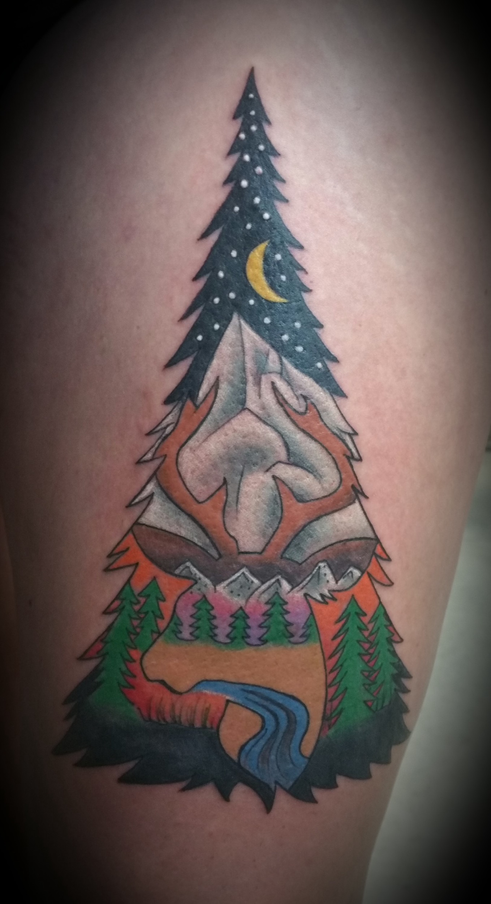
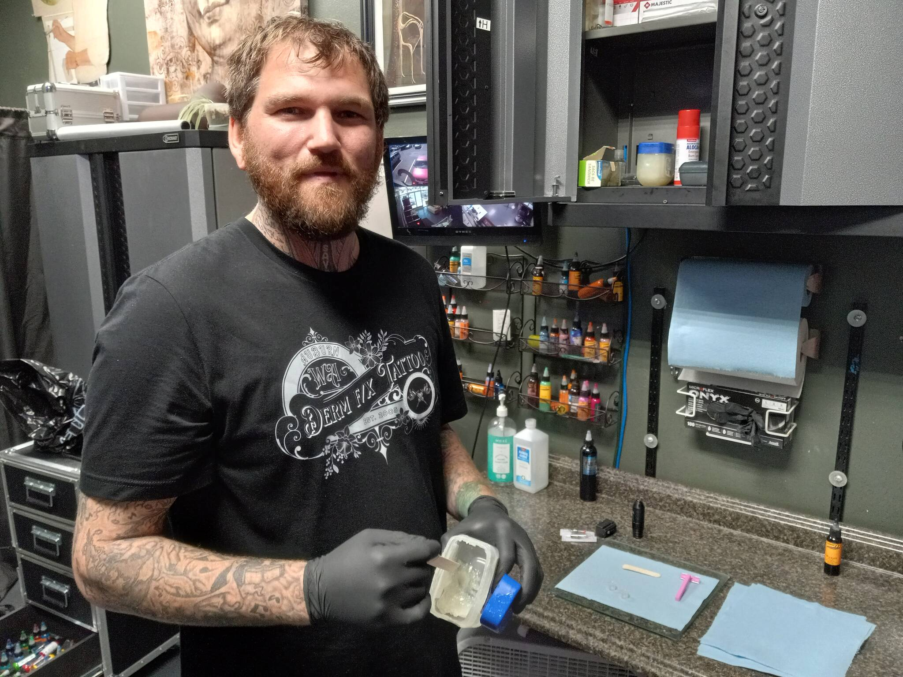

Auburn, Washington · Since 2005
Art you
live in.
Custom tattooing & piercing.
A personal piece starts with a conversation.


Visit the studio
Call to confirm today’s hours.3312 Auburn Way S, Ste C
Auburn, WA 98092

Tattooing, cover-ups & piercing
Your first piece.
Or your next.
A new tattoo, a change to an existing piece, or a piercing. Start by looking at the work, then talk with the studio about the artist and approach.
Find your starting point ↗Selected from the archive
Every piece
has a point of view.

Meet Cody Hart · owner & tattooer
The person
behind the piece.
An Auburn native whose connection to tattooing began young. Cody started the shop with his father and built his working life around the craft.
Meet Cody & see his work ↗In a client’s words
“Cody was absolutely wonderful! He was very professional and is insanely talented!”
Christine McBrideRecommended on Facebook · via Birdeye
5 years ago · source viewed September 5, 2026
Start with what matters to you